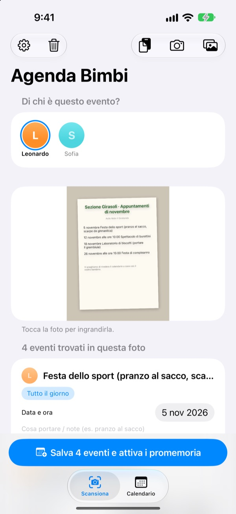
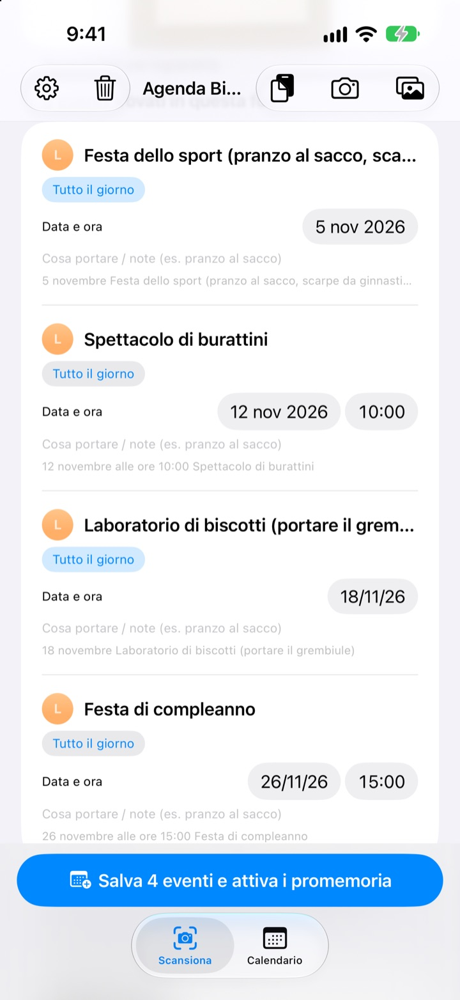
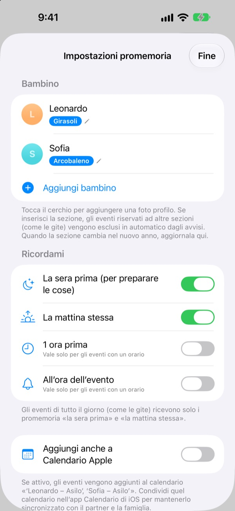
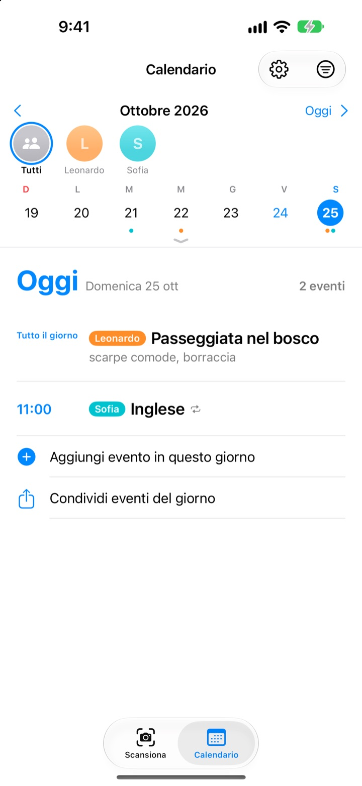

Basta una foto.
Al resto pensiamo noi.
Fotografa il calendario del mese che ti dà l’asilo. Agenda Bimbi legge date, orari e nomi delle attività e li aggiunge tutti insieme. La sera prima della gita, alle 20, arriva il promemoria: non dimenticare il pranzo al sacco.
Tutto è gratis. Le tue foto restano sul tuo iPhone.

Scatta una foto a un avviso
Ecco un avviso d’esempio con le attività del mese prossimo. Scattagli una foto: come nell’app, vengono estratti gli impegni e le cose da portare, e i promemoria si programmano agli orari che scegli.
Ricopi ancora a mano gli avvisi dell’asilo nel calendario?
Cinque o sei attività al mese, e ogni volta c’è da portare qualcosa di diverso: il pranzo al sacco, la tuta, il grembiule. Il calendario sul frigo non lo vedi mentre vai al lavoro, e te ne ricordi sempre la mattina stessa. Agenda Bimbi trasforma quel foglio in eventi e promemoria.
Una foto, tutto il mese
Calendario a griglia, avviso ai genitori o volantino: scatta una foto o sceglila dalla libreria e date, orari e nomi delle attività vengono letti per te. Puoi anche incollare un messaggio dell’asilo: «domani» o «questo venerdì» diventano date vere.
Prima di salvare correggi titolo, data o cose da portare, e scorri per eliminare quello che non serve. Se inserisci la sezione di tuo figlio, le attività riservate alle altre sezioni vengono scartate.

La sera prima, il promemoria
Scegli tra le 20 della sera prima, le 7:30 della mattina stessa, 1 ora prima o all’ora esatta. Le cose da portare compaiono nel promemoria, così lo zainetto è pronto.
Con Calendario Apple gli eventi finiscono in un calendario con il nome di tuo figlio, senza mai doppioni.

Più figli, tutta la famiglia
Ogni bambino ha il suo colore. Puoi vederli tutti insieme o uno alla volta, e l’app usa lo storico per indovinare di chi è il nuovo avviso.
Invia un link d’invito e il partner, i nonni o la babysitter vedono e modificano gli stessi eventi. Un widget nella schermata Home mostra cosa arriva.

Si comincia in tre passi
- 1
Aggiungi tuo figlio
Nome e sezione. La foto profilo quando vuoi.
- 2
Fotografa l’avviso
Di fronte e con il testo nitido, si legge molto meglio.
- 3
Controlla e salva
Consenti le notifiche e i promemoria arrivano quando hai scelto.
Quando arrivano i promemoria
- Ore 20:00 della sera prima
- Per preparare le cose. Attivo di default
- Ore 7:30 della mattina stessa
- Il programma di oggi. Attivo di default
- 1 ora prima
- Solo per attività con un orario
- All’ora dell’evento
- Solo per attività con un orario
Le attività di un’intera giornata, come una gita, hanno solo il promemoria della sera prima e quello del mattino. Puoi attivarli o disattivarli quando vuoi nelle impostazioni.
Tutto è gratis
Gratis
- Lettura delle attività da foto e messaggi
- Correzioni prima di salvare, filtro delle altre sezioni
- Promemoria la sera prima, al mattino, 1 ora prima e puntuali
- Un colore per ogni figlio e un calendario unico
- Sincronizzazione con Calendario Apple
- Condivisione in famiglia con un link d’invito
- Widget nella schermata Home
Sostieni lo sviluppatore
- Dalle impostazioni puoi lasciare una piccola mancia, quanto vuoi
- La mancia non sblocca nulla. L’app funziona allo stesso modo
Niente pubblicità, niente abbonamenti.
Domande frequenti
Che tipo di foto posso usare?
Calendari mensili a griglia, avvisi scritti in forma di testo e singole comunicazioni o volantini. Una foto scattata di fronte, con il testo nitido, viene letta meglio. Puoi anche scegliere più foto da scansionare insieme.
Mancano alcune attività o c’è un errore nel titolo.
La scrittura a mano o il testo sbiadito possono essere difficili da leggere. Correggi titolo, data o cose da portare direttamente nell’elenco, oppure scorri per eliminare ciò che non serve. Per aggiungere un’attività mancante usa «Aggiungi evento a mano» nella scheda Scansiona e salva di nuovo.
Non ricevo i promemoria.
Controlla in Impostazioni > Notifiche > Agenda Bimbi che le notifiche siano consentite. Nelle impostazioni dell’app (⚙️) puoi anche scegliere quali promemoria ricevere.
Compaiono attività di altre sezioni.
Inserisci il nome della sezione di tuo figlio nelle impostazioni: le attività riservate alle altre sezioni verranno scartate. Quando cambia sezione, basta modificarla lì.
Ho più di un figlio.
Nelle impostazioni puoi aggiungere tutti i figli che vuoi, ognuno con la sua foto. Durante la scansione scegli per chi sono le attività: nel calendario ogni bambino ha il suo colore e puoi passare dalla vista unica al filtro per figlio.
Come condivido gli impegni con il mio partner?
Nelle impostazioni, in «Condivisione eventi», tocca «Invita altre persone» e manda il link via messaggio. Chi riceve l’invito vede e modifica tutti i figli e gli eventi, e le modifiche fatte da una parte compaiono subito anche dall’altra. Non c’entra con In famiglia di Apple.
Ci sono altri modi per condividere?
Con il pulsante di condivisione nella scheda Calendario puoi inviare un file di Agenda Bimbi, un file calendario (.ics) o un riepilogo in testo. Con «Aggiungi anche a Calendario Apple» viene creato un calendario con il nome di tuo figlio; condividendolo via iCloud nell’app Calendario, anche la famiglia resta aggiornata.
Le mie foto o i miei eventi vengono inviati da qualche parte?
No. Il testo nelle foto viene letto interamente sul dispositivo e i dati restano solo lì. Gli eventi passano dal tuo iCloud solo se inviti qualcuno con «Condivisione eventi», e solo verso le persone invitate.
Problemi o idee? Scrivi a leeo@kakao.com. Di solito rispondiamo entro 2 o 3 giorni. Indicare modello del dispositivo e versione di iOS ci aiuta molto.